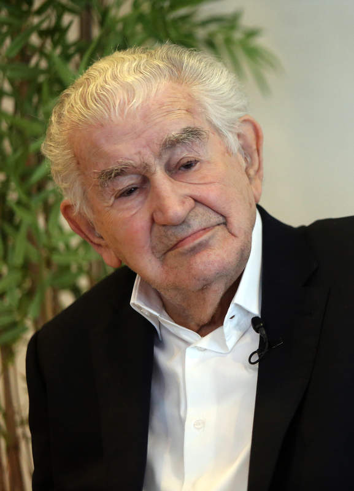

"Soy el que comienza a no existir
y el que solloza todavía.
Es horrible se dos inútilmente."
ANTONIO GAMONEDA, Lápidas;
(1977-1986)
ANTONIO GAMONEDA
Introducción
Biografía
Oviedo, 1931. Pertenece por cronología a la llamada generación de los 50. Sin embargo, le separan diferencias notables al haber estado aislado y restringido durante años al ámbito rural leonés, ajeno a grupos y escuelas.
Poemas
BLUES DE LA CASA
En mi casa están vacías las paredes,
y yo sufro mirando la cal fría.
Mi casa tiene puertas y ventanas:
no puedo soportar tanto agujero.
Aquí vive mi madre con sus lentes.
Aquí está mi mujer con sus cabellos.
Aquí viven mis hijas con sus ojos.
¿Por qué sufro mirando las paredes?
El mundo es grande. Dentro de una casa
no cabrá nunca. El mundo es grande.
Dentro de una casa -el mundo es grande-
no es bueno que haya tanto sufrfimiento.
Antonio Gamoneda, Blues Castellano, (1961-1966).